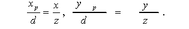
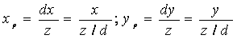
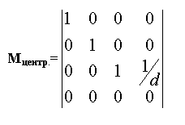
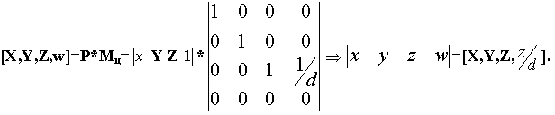
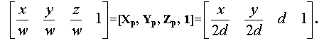
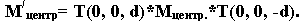

Математическое описание плоских проекций

Рис. 1
Точка P проецируется на проекционную плоскость, расположенную на расстоянии d от начала координат. Для вычисления Xp и Yp - проекции точки (X,Y,Z) -запишем отношения из подобия треугольников

Умножая обе части на d, получаем:

Расстояние d является в данном случае масштабным множителем, примененным к координатам Xp и Yp. Фактором, приводящим к тому, что на центральной проекции более удаленные объекты выглядят мельче, чем ближние, является деление на Z. Отметим, что допустимы все значения Z, кроме Z = 0. Точки могут располагаться, как на оси Z, так и между центром проекции и проекционной плоскостью. Данное преобразование можно представить в виде матрицы 4х4.

Умножая точку P = (X,Y,Z,1) на Мц., получаем общее выражение для точки в однородных координатах:

Теперь, поделив на w (которое равно z /d ) для обратного перехода к трем измерениям, имеем:

Результат содержит преобразованную Z-координату d, соответствующую положению проекционной плоскости вдоль оси Z.
Другая схема построения центральной проекции такова:
Эту матрицу можно получить из матрицы Мцентр :

Ортографическое проецирование на плоскость Z = 0 очевидно. Направление совпадает с нормалью к плоскости проекции, в нашем случае с осью Z. Таким образом, точка P имеет координаты Xp= X, Yp= Y, Zp= 0. Эта проекция описывается матрицей
Рассмотрим теперь косоугольную проекцию, матрица которая может быть записана исходя из значений a и l .
Изображен единственный куб, спроецированный на плоскость XOY. Из рисунка видно, что проекцией точки P находящейся на задней стороне куба, является точка P' принадлежащая плоскости XOY. Это означает, что направление проецирования совпадает с отрезком PP', проходящем через эти две точки. Это направление есть P'-P=(lcosa,lsina,-1) .
Направление проецирование составляет угол с плоскостью XOY. Теперь рассмотрим произвольную точку (X,Y,Z) и определим ее косоугольную проекцию (Xp,Yp) на плоскость XOY. Показаны два изображения точки и проектор, который параллелен предыдущему. Уравнение для X и Y координат проектора как функций Z имеют вид Y = mZ + b. Решая два уравнения относительно Xp и Yp, получаем:
Матрица 4х4, которая описывает косоугольную проекцию, имеет вид
Применение Мкос приводит к сдвигу и последующему проецированию объекта: плоскости с постоянной координатой Z = Z, переносятся в направлении X на Z*lcosa и в направлении Y на Z*lsina и затем проецируется на плоскость Z = 0. Сдвиг сохраняет параллельность прямых, а также, углы и расстояния в плоскостях, параллельных оси Z.
Для проецирования Кавалье l=1 , поэтому угол b, показанный на рисунке равен 45о. Для проецирования Кабине l=1/2 , а b=arctg(2)=63.4 . В случае ортографической проекции l=0 и b=90 , следовательно Морт есть частный случай Мкос .